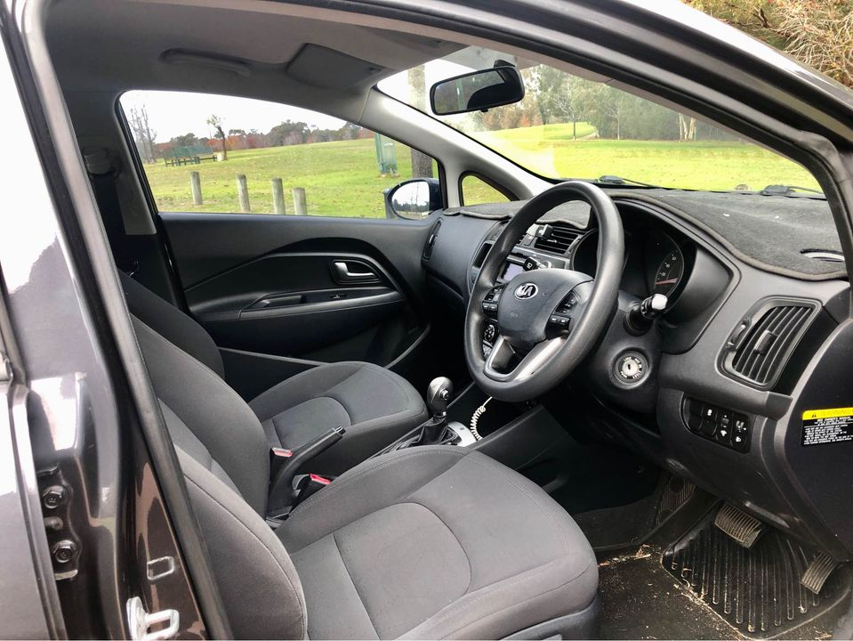

If your Kia fails its road worthy, it’s illegal for you to drive it on the road and you won’t be able to sell it. So you will have to face the repair bill for it to pass, whether you want to have it repaired or not. Repeated failures are a sign that it’s time to scrap your Kia.

For the same reasons that you’d buy any other Kia. A lot of the features that make a Kia unique are standard on all of the models. The V6 and V8 engines offer oodles of power. There is a four-wheel drive option available with the turbo-four engine. It has a six-speed automatic transmission. If you have a brand new Kia, you are covered for up to five years on your warranty, but for the first two years, you should use the complimentary roadside assistance. What if I don’t want a new Kia? You can still get a new Kia with a five-year/100,000 mile warranty. Just be sure to drive your Kia in perfect condition and keep it at a safe distance from the back of your car or when driving on rough, uneven terrain. If you’re on a long trip, you can buy a car sitter.
Kia offers a nice lineup of cars, with all the options you’d expect from a high-volume company. In this article, we’re going to offer you a helpful guide to give you a quick idea of what to look for in a Kia. It’s important that you are not going to ignore any “red flags” or warning signs that point to a problem. In case you do, that might cause your Kia to fail a road worthy test. While driving on the road, avoid heavy acceleration and braking, hard cornering, and sudden changes of direction. These are all signs of an under-belly bump. Make sure you are not tailgating too much and driving too close to the car in front. If the panel underneath the front airbag or floor mats shows signs of corrosion, the car is already very likely to fail the road worthy test.
If your car hasn’t failed road worth in a few years, the chances are that it’s not been driven enough to go beyond the three-year road-worth limit. There are some of the common reasons why a Kia might fail road worth. You should be able to recognise your car when it fails road worth and get a mechanic to check it. Here are some of the most common reasons why a car might fail road worth: It’s in need of repairs. If your Kia gets damaged at the wheel or at the mechanical parts, it’s likely that it’s out of road worth and can’t be driven. It has been damaged by an accident, and it has no warranty for repairs. The repairs will be costly, and you would be left with a damaged car. The repairs will have to be done under warranty. It doesn’t work in the first place.
It can cost anywhere from ₹5,000 to ₹2 lakh to fix your Kia according to the Kia dealer, who will determine the cost of the repairs. But if you want to get a quote from a Kia mechanic or to be on the safe side you can check this website. This is the list of parts that Kia will require to repair your car: 1. Front Exhaust: 2. Front and Rear Shock Absorbers: 3. Wheel Spring Replacement: 4. Wheel Hub/Spokes Replacement: 5. Engine/Transmission Repairs: 6. Brakes Replacement: 7. Tires Replacements: 8. Tyres Replacement: If your Kia gets the failed road worthy mention, then it is very good that you are aware of these parts and that you have these parts yourself. These are the parts you need to get for repairs to the front and rear of your car.
Poorly designed product is like mental illness. Sometimes they work, and sometimes they don’t. It just is. It is what it is. The question is, will you be going through all these sacrifices and charges on a car that doesn’t really do what you expect it to do?
Address:103 Sheffield Rd, Welshpool WA 6106
Phone: (08) 9358 1392